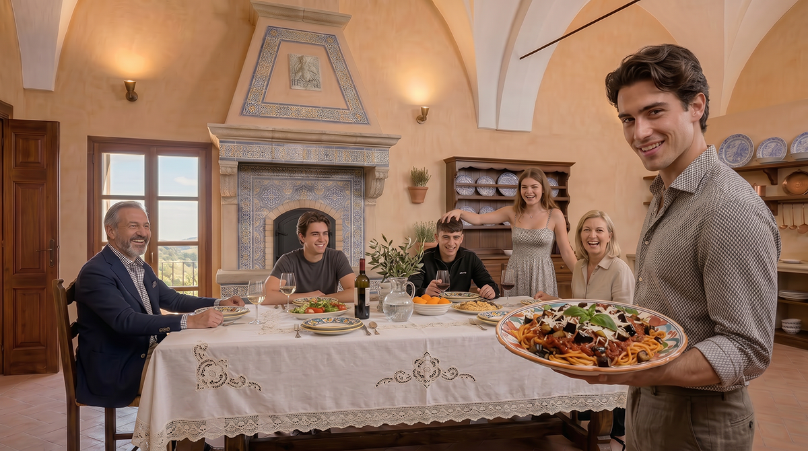
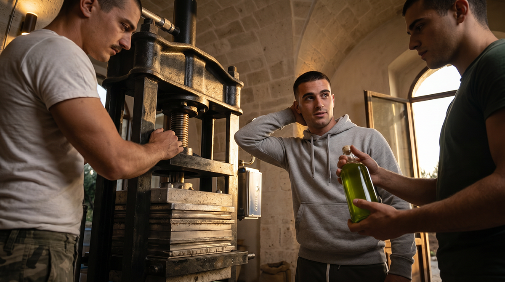
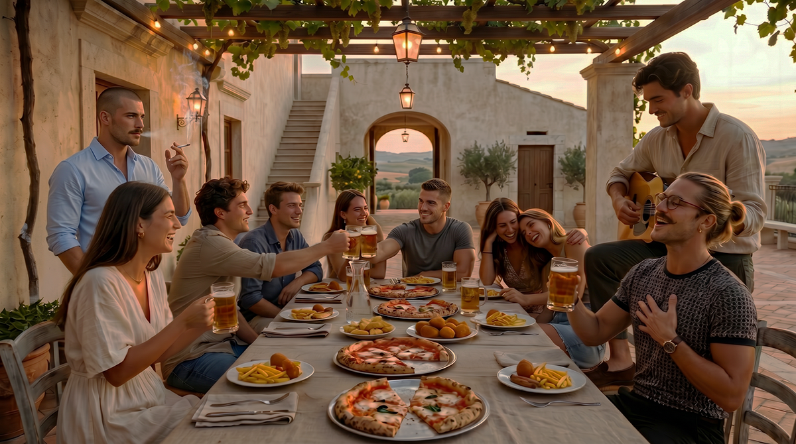
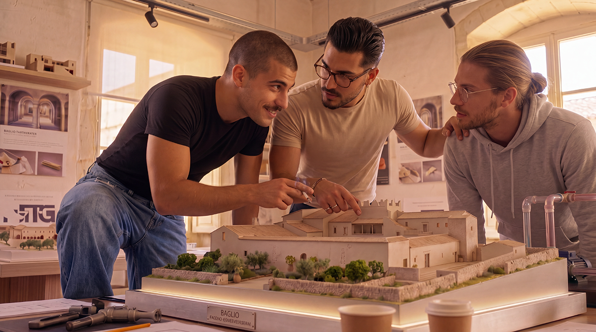

At Baglio San Michele you do not come only to “visit”. You come to stay. Those who dream of joining the community permanently are invited to spend a period of residence as an indispensable first step. Only by living here, even for a few weeks, can one truly understand whether this rhythm, these values and this life are for them.
But the Baglio is also open to those who have not yet decided to move. Anyone seeking a period of silence, study, prayer or simply to disconnect from the frenzy of the city is welcome.

Why a stay is important
Before deciding to live permanently at the Baglio, it is essential to have stayed here. Only then can one experience the real rhythm of the day, cohabitation with other families, manual work, silence and prayer. A stay is not a “tourist sample”: it is the most honest way to understand if this is truly one’s place.

Our hospitality
Our welcome is inspired by the Rule of St Benedict: “Guest, you are like Christ”. Those who come to the Baglio are not clients, but guests entering a living community. In exchange for hospitality, a willingness to reciprocate is expected: with a financial contribution, with hours of work, by teaching a skill one possesses, or simply by showing openness to learning. There is no “customer service”. There is reciprocity.

The rhythm of the day
Life follows a simple and regular rhythm marked by the bell: Mass in the morning, Angelus at noon, Vespers in the evening. Meals are shared at our table, prepared with what the land and the work of each day give us. There is no restaurant or fixed menu: there is the welcome of a large family. On Fridays we eat lean. In the months of May and October someone recites the Rosary in the garden or in the chapel. Those who wish join in; those who do not simply respect the fact that the Christian faith is the heart of this community.
The rooms
You will not find “double rooms for single use” or mini-suites with jacuzzi. You will find simple but comfortable cells, designed for those who desire privacy and silence. For those who come with family or desire more space, some apartments are available. There is no room service (except in cases of illness, when neighbours spontaneously care for the person). One lives with simplicity, but neither in misery nor in shabbiness. The good government of the Baglio allows everyone to live with dignity.

What we expect from you
During the stay we ask you to contribute according to your means (work, skills, time), to be willing to learn the trades and habits of the community, to respect the rhythm and the faith that animate the place, and to share ideas and suggestions. This adventure is at its beginning and no one pretends to know everything. If you are looking for work, you can find it here. If you know a craft, you can pass it on here.

An invitation
Whether you are considering joining the community permanently or simply seeking a period of quiet, study or prayer, the Baglio welcomes you. A stay is the best way to understand if this is your place.
Write to propose your dates